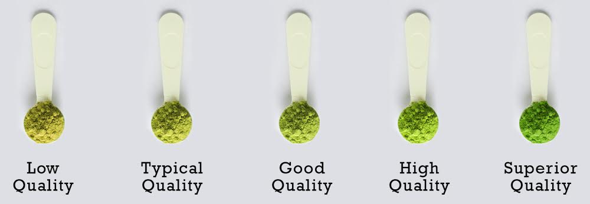

Quality: Color
You can tell the quality of a Matcha powder based off its color. Matcha is made from shaded-grown tea leaf. Shaded-grown tea leaf is high in chlorophyll which give matcha the vibrant green colour. Older tea leaf has lower density of chlorophyll which give matcha yellowish colour. High grade matcha has a vibrant green colour, while low grade matcha has yellowish or brownish colour.

Matcha Grades
Matcha comes in three popular grades: Ceremonial, Medium (or Premium/Latte), Culinary.
Each of these grades is best suited to a particular purpose. The different Matcha grades can be determined based on their time of harvest, affecting the eventual product in aspects ranging from color to taste to nutritional composition.
Ceremonial
Best for: Drinking straight.
Used for centuries in traditional tea ceremonies in Japan, this is the highest grade of Matcha available.
Medium
Best for: Lattes and daily use.
This is a versatile, "everyday" tea designed to hold its own against other ingredients.
Culinary
Best for: Baking and cooking.
Made from older, sun-matured leaves. It is noticeably more Dry and bold, which is perfect for ensuring the matcha flavor isn't lost in cakes, cookies, or heavy recipes.
6 Flavors Chart
When describing matcha, there aren't strict methods or words to do so, but to narrow it down we can rely on a sensory balance of six core attributes to capture its complex character.
Thickness
This refers to the body or viscosity in how the tea is prepared. This can also suggest a rich, velvety, creamy mouthfeel.
Sweetness
Unlike added sugar, this refers to the natural, subtle sweetness.
Umami
A deep, savory flavour. In matcha, this is a rich, brothy, or oceanic depth.
Vegetal
The signature "green" taste. This can range from fresh-cut grass to baby spinach or leafy greens.
Astringency
This is the slight "puckering" sensation on the tongue. Leaves mouth feeling tight.
Acidity
While matcha is generally low in acid, this note refers to a bright, crisp spark that can balance out heavier flavors.
Cultivars
The cultivar acts as the "DNA" of a matcha's flavor. Matcha tea cultivars has its own unique characteristics and origins. Understanding these cultivars can help tea enthusiasts appreciate the nuances of different matcha varieties:
- Samidori – smooth, sweet, traditional Kyoto-style umami.
- Okumidori – vibrant colour, rich umami, ideal for ceremonial use.
- Gokō – intensely aromatic, deeply savoury; prized for premium matcha.
- Asahi – elegant, creamy, extremely high-end with exceptional smoothness.
- Ujihikari – rare Kyoto cultivar with refined sweetness grown in very limited quantities.
- Yabukita – Japan's most common cultivar; versatile and balanced.
- Saemidori – vibrant green, naturally sweet; excellent for lattes and ceremony.